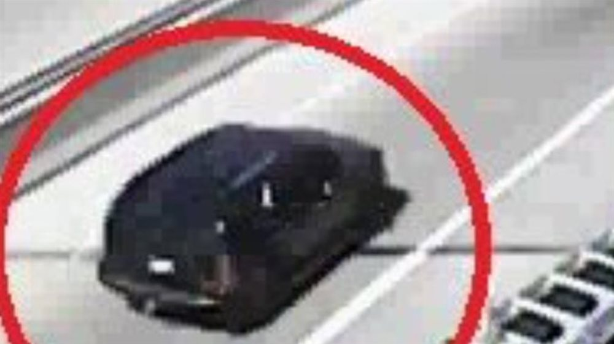
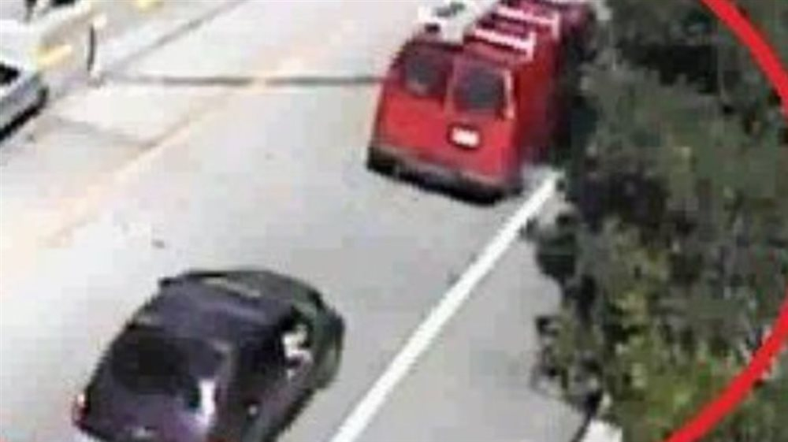

Lian Cung Nung case: shot in the head in a traffic jam at 5:10 p.m., with his wife beside him. The bullet came from above.
At about 5:10 p.m. on July 25, 2017, Lian Cung Nung, 28, was driving his blue 2005 Toyota Camry down the ramp from West Sixth Street to southbound I-75, with his wife in the passenger seat. Traffic was crawling at about 3 to 6 miles per hour because of Brent Spence Bridge construction. Two shots rang out; one hit him in the top rear of the head. He died the next evening. No one saw the shooter.
Case file at a glance
Investigators ruled out road rage: his wife heard no horns and he made no sudden turns. No casings were found, and the bullet was too fragmented to trace. The prosecutor believes the shot came from the ramp above, which leads to eastbound Fort Washington Way, and released a traffic-camera image of a black SUV with tinted windows that was in the right place at the right time. Hundreds of drivers were stopped on those ramps. Someone saw something.
- Not road rage.His wife heard no horns and he made no sudden moves; the drivers stopped on the ramp said there was no confrontation (AG; WKRC).
- A shot from above.The bullet hit the top rear of his head. Investigators believe it came from the adjacent ramp to eastbound Fort Washington Way, from a vehicle sitting higher than a sedan (AG; Deters, WKRC).
- A bus recorded the gunshots.A TANK bus five cars ahead recorded two shots, then his car striking the car ahead and drifting to the guardrail (AG).
- Three vehicles.The prosecutor released images of a black SUV on the upper ramp and of a red work van and a PT Cruiser whose drivers may be witnesses (WKRC; 700WLW).
Editorial assessment of public sources, not a finding of fact. Nobody named here has been charged unless this page says so.
What happened
The fullest account is the Cincinnati police narrative in the Ohio Attorney General listing (case 3014). News reports: 700WLW and WCPO (July 26-27, 2017), WKRC (July 27 and Oct 16, 2017), 700WLW (Oct 16, 2017).
A family from Myanmar
Lian Cung Nung and his wife, Siang Hlei Par, are immigrants from Myanmar (AG; WKRC) living in Crescent Springs, Kentucky (700WLW). They have three young children, have just enrolled them in Sycamore schools and are moving to Blue Ash (WKRC).
On the ramp
Heading home to Kentucky, he drives the blue 2005 Camry down the ramp from West Sixth Street to southbound I-75. Brent Spence Bridge work has traffic backed up; cars move at about 3 to 6 mph (AG; WKRC).
Two shots
A TANK bus about five cars ahead records two gunshots, different in pitch. His car hits the car in front, then drifts right to the guardrail. The driver's window is shattered (AG). His wife: "He was just all bleeding" (WCPO).
No shooter seen
Witnesses hear shots but see no shooter. No casings are found; firearms examiners can read nothing on the tiny fragments (AG).
He dies
He is pronounced dead at the hospital (AG). Police say they have no description of the shooter (WCPO).
The prosecutor's appeal
Prosecutor Joe Deters releases traffic-camera images: a black SUV with tinted windows on the ramp above, in the right place to explain the bullet's path, and a red work van and PT Cruiser whose drivers may have seen something. Crime Stoppers and his office put up $2,500 each, $5,000 in all (WKRC; 700WLW).
Cold case task force
Cincinnati police and Hamilton County launch a cold case task force. We do not know whether it has reviewed this case.
Our check
The state still lists the case as unsolved. We found no arrest, charge or news report after 2017.
Victims
A 28-year-old husband and father of three.
Photo: Ohio Attorney General listing. The source states no reuse license; shown at the site owner's direction. Contact us to have it removed.
DiedLian Cung Nung, 28
Born December 14, 1988 (Ohio AG). An immigrant from Myanmar; husband and father of three young children (WKRC; WCPO). His wife, Siang Par: "He was a loving husband; he loved his children" (WCPO).
Each photo is credited under the picture. Family members or others who want a photo added, changed, or removed can use the contact form at the bottom of this page.
Evidence
What exists, and what each piece may or may not mean.
| Item | What is known | Disputed or unknown | |
|---|---|---|---|
| Traffic cameras | The prosecutor released images of a black SUV with tinted windows on the ramp above: |  Black SUV with tinted windows on the ramp above. Traffic-camera image released by the Hamilton County Prosecutor's Office, Oct 16, 2017, via WKRC. Shown at the site owner's direction; contact us to have it removed. Not charged; the prosecutor said its position fits the bullet's path. | The plate and driver have not been released. Being there does not prove anyone in it fired. |
| Witness vehicles | Investigators want to find the drivers of a red work van and a PT Cruiser (WKRC; 700WLW): |  Red work van whose driver investigators want to find as a possible witness. Traffic-camera image released by the Hamilton County Prosecutor's Office, Oct 16, 2017, via WKRC. Shown at the site owner's direction; contact us to have it removed. | No PT Cruiser image was found in what we could read. |
| TANK bus video | Video and audio from a bus about five cars ahead: two consecutive shots, different in pitch, then the crash (AG). | Not public. | |
| Bullet | Tiny lead and copper-jacket fragments from him and the car; no markings could be read (AG). The second bullet was never found. | Caliber and weapon type: not public. | |
| Bullet path | Struck the top rear of his head through the driver's window (WKRC; AG). Police ruled out the nearby buildings; the most likely origin is the ramp to eastbound Fort Washington Way, from a vehicle higher than a sedan (AG). | An estimate from the angle, not a finding. | |
| Casings | None found (AG). | A revolver, or a shooter who kept the casings inside a vehicle, would leave none. |
Public documents
The Ohio Attorney General listing (with a detailed police narrative) and the prosecutor's released traffic-camera images are the public record. The full video and police file are not public.
| Document | Holder | What it shows | Access |
|---|---|---|---|
| Ohio AG: Lian Cung Nung (case 3014) | Ohio Attorney General | Police narrative: bus audio, bullet path, firearms exam; photo. | Online, free |
| Traffic-camera images (WKRC, Oct 2017) | Hamilton County Prosecutor via WKRC | Black SUV on the upper ramp; red work van. | Online, free |
| TANK bus video and audio | Cincinnati Police | Two gunshots and the crash. | Withheld or sealed |
| Firearms examination | Hamilton County crime lab | Fragments too small to read (per AG). | Withheld or sealed |
| Cincinnati Police homicide file and autopsy | Cincinnati Police; Hamilton County Coroner | The investigation. | Withheld or sealed |
Access labels: Online, free = we could open it. Fan-hosted copy = a private researcher posted scans; originals are held by the named agency, and we cannot vouch for completeness. Quoted in news = reporters read it; we did not see the document itself. Request needed = held by an agency or court. Withheld = the holder has not released it. We cannot reach non-public records, and we do not try to.
Online discussion (unverified)
Where people talk about this case online, and how to read it.
| Platform | Live search | What you tend to find |
|---|---|---|
| Google: Reddit | site:reddit.com search | Public Reddit threads that Google has indexed, including old discussions. |
| Google: X and Twitter | X and Twitter posts | Public posts and profiles that appear in search results. |
| Google: Facebook | Public Facebook pages and posts | Only public pages and groups that Google can see. Private groups never appear. |
| Google: Instagram and TikTok | Instagram and TikTok | Public posts, memorials, and videos. |
| Google: forums | Forums and message boards | Long-running true-crime forums. |
| Google News | Latest news | Newest reporting, which is usually more reliable than posts. |
| Search Reddit | Long discussion threads and theories, often by amateur researchers. No sign-in needed to read. | |
| X (Twitter) | Search X | Short posts, news links, and anniversary notes. May require sign-in. |
| Search Facebook | Public groups and family or community pages. Requires sign-in. | |
| Search #liannung | Memorial and true-crime posts. Requires sign-in. | |
| YouTube | Search YouTube | Documentaries, news clips, and interviews. Quality varies widely. |
Be careful with online theories. Naming a private person as a suspect can harm an innocent family, and many "identifications" on forums have been wrong. Our own tools could not read these platforms: Reddit blocks automated access, and the others require an account. The Google searches above work from your browser. To get new public mentions by email, make a free Google Alert for the case name in quotation marks.
Coverage timeline and verification
What local and national reports say, and when we last checked for a solution.
| Date | Outlet | What it reported | Link |
|---|---|---|---|
| Jul 26, 2017 | 700WLW | Man shot near the Brent Spence Bridge dies; road rage or stray bullet unclear. | Read |
| Jul 27, 2017 | WCPO | Named; no description of the shooter; his wife's account. | Read |
| Jul 27, 2017 | WKRC | Father of three from Myanmar. | Read |
| Oct 16, 2017 | WKRC | Prosecutor releases images: black SUV above; red van and PT Cruiser witnesses; $5,000. | Read |
| Current | Ohio AG | Listed as unsolved homicide 3014. | Read |
Status is re-checked on a regular schedule. If you know of a development we missed, use the clue form near the top of this page or the contact form, and include a link.
Suspects
No suspect has been named. The prosecutor released an image of a vehicle of interest.
Black SUV with tinted windows on the ramp above. Traffic-camera image released by the Hamilton County Prosecutor's Office, Oct 16, 2017, via WKRC. Shown at the site owner's direction; contact us to have it removed. Not charged; the prosecutor said its position fits the bullet's path.
Vehicle of interestThe black SUV on the ramp above
Why named: Recorded on the upper ramp at the right time and place to explain the trajectory, said Prosecutor Joe Deters (WKRC, Oct 2017).
Against: Unidentified. No witness saw a shot fired from it.
The shooter
Why named: Fired two shots into slow traffic, probably from above (AG).
Against: No name, description or image of a person has been released.
Where a card shows a silhouette, we found no photo. Anyone who wants a photo added, changed, or removed can use the contact form at the bottom of this page.
Latest: three vehicles and a crowded ramp
The most recent public appeal we found is the prosecutor's, October 16, 2017.
What is known
- He was shot in the head on the Sixth Street ramp to I-75 South at about 5:10 p.m. on July 25, 2017, and died the next day.
- Investigators believe the shot came from the ramp above; the prosecutor released an image of a black SUV there.
- A $5,000 reward was offered in 2017.
What would settle it
- The black SUV. Its driver or passengers, or anyone who knows an SUV like it that used the ramp to eastbound Fort Washington Way that evening.
- The red work van and the PT Cruiser. Their drivers were in position to see or hear the shot.
- Dashcams and phones. Video from any of the hundreds of cars stuck in the Brent Spence backup at 5:10 p.m.
A shot fired from a higher vehicle on the ramp above, by someone with no connection to him
We put the chance that he was a random target, not the intended victim, at roughly 80%: he had no known enemies in any report, and investigators ruled out road rage with his car. That is our judgment, not a finding. We put the chance of a charge within five years at roughly 7%: no casing, no usable bullet, and no public update since 2017.
Editorial judgment, not statistics.
Elimination matrix
"—" means no public information, not a clean result.
| Person or idea | In position | Physical link | Legal outcome |
|---|---|---|---|
| Black SUV, upper ramp | ✓ traffic camera | ? angle only | — unidentified |
| Road rage with his car | — | — | ✗ ruled out by investigators |
| Shot from a building | — | — | ✗ ruled out by canvass |
✗ excluded or contradicted · ✓ supports · ? disputed · — nothing public. No cell is an official finding.
Our hypothesis
Editorial reading of public records. A working theory, not a finding, and it names no individual.
A random shot from the ramp above, into a traffic jam
- The angle points up. The bullet entered the top rear of his head through the side window. A shooter level with him in another car would not produce that path.
- No reason to target him. Nothing in any report suggests he had a dispute with anyone; his wife saw no confrontation.
- Traffic gave cover. Hundreds of cars, ramps above and below, construction noise: a shooter could fire and drive on.
- No casings. Consistent with a shot from inside a vehicle.
- The camera may hold the answer. If the black SUV can be identified, its occupants can be ruled in or out.
Judgment, not statistics.
Missing links
Questions raised by gaps in the public record.
1. The SUV
Who was in the black SUV with tinted windows.
2. The witnesses
The drivers of the red work van and the PT Cruiser.
3. The second bullet
Where it went; never found.
4. The weapon
What kind of gun fired two shots with different sounds.
5. Other shootings
Whether any other highway shootings in 2017 match.
Evidence gaps
"Not public" means we could not find a report.
| Item | Tested | Gap |
|---|---|---|
| Autopsy | Done (Hamilton County Coroner). | Report not public. |
| Firearms exam | Done; fragments unreadable (AG). | Report not public. |
| Camera footage | Images released Oct 2017. | Full footage and plates not public. |
| Police file | Cincinnati Police Homicide Unit. | Not public. |
Forensic tech
| Tool | What it could do | Status here |
|---|---|---|
| Video enhancement | Read plates or body details from 2017 traffic and bus video. | Not reported |
| Ballistics database (NIBIN) | Link fragments to other shootings. | Fragments too small, per AG |
| License-plate reader data | Identify vehicles on the upper ramp at 5:10 p.m. | Not reported |
Solved cases
Local cases that moved after decades.
Carol Sue Klaber (Boone County, KY, 1976)
Investigators say a private genealogy investigation helped them identify Thomas Dunaway, who died in 1990, as the man who killed the 16-year-old. He cannot be indicted, so prosecutors sent a letter saying he would have been charged. The lesson: genealogy can name a killer after decades, even when no trial is possible.
Forensic genetic genealogy training
In 2024, local investigators were being trained in the technique, which has already helped solve Cincinnati-area cases, according to FOX19. The lesson: the tool is now local, so cases with usable DNA have a real path forward.
Golden State Killer
Old crime-scene DNA matched relatives in a public database and led to a 2018 arrest. The lesson: a usable sample can still work after decades.
Case details come from public news coverage and the Boone County Sheriff's cold-case list. Confirm in court records.
False leads
| Claim | Source and date | Where it stands |
|---|---|---|
| Road rage | Early police statement, July 2017 | Police at first did not know whether it was road rage or a stray bullet (700WLW). Investigators later ruled out road rage involving his car (AG). Deters guessed someone angry at traffic took a shot; that is his speculation. |
| Name spelling | News reports | Reports give Lian Nung and Lian Cung Nung; one database lists "Lian Cung Hung." The state uses Lian Cung Nung. |
| Other I-75 shootings | WKRC 2021; FOX19 2022-2023 | Ellonzo Martin (Hopple Street, 2021) and later I-75 shootings are separate cases. |
Where
The shooting happened on the ramp from West Sixth Street to southbound I-75 in downtown Cincinnati, near the Brent Spence Bridge, below the ramp to eastbound Fort Washington Way.
Open in maps: W. Sixth St. ramp to I-75 South. We show no photograph of the scene.
Source ratings
| Source | Type | Rating | Use with care because |
|---|---|---|---|
| Ohio Attorney General listing, case 3014 | Agency | A | Opened; detailed police narrative and photo. |
| WKRC (July 27 and Oct 16, 2017) | Local TV | A | Read; prosecutor's images and quotes. |
| WCPO (July 27, 2017) | Local news | A | Read; his wife's account. |
| 700WLW (July 26 and Oct 16, 2017) | Radio news | A | Read. |
| Crime Solvers Central | Volunteer database | C | Behind a bot check; not read. |
Records
Cincinnati Police Department Homicide Unit
513-352-3542.
Greater Cincinnati Crime Stoppers
513-352-3040; tips can be anonymous.
Hamilton County Prosecutor
Released the 2017 images; charging decisions.
Sample public-records request
Under the Ohio Public Records Act, I request copies of non-exempt records relating to the July 25, 2017 shooting of Lian Cung Nung on the West Sixth Street ramp to southbound I-75, Cincinnati (Ohio Attorney General unsolved homicide 3014), including incident reports, laboratory reports, and any evidence inventory. Please send electronic copies. If any part is withheld, please identify the exemption relied on and release all reasonably segregable material.
Agencies often withhold records of open investigations, so expect partial answers.
Remembering the victims
Lian was 28, a husband and father of three. If you are family or a friend, we would welcome a photo, a memory or a statement, and we will never publish anything you ask us not to.
News & databases
In the news
Loading headlines…
Research
News archives
Sources
Every fact on this page comes from one of these. Where they disagree, we say so above.
- Lian Cung Nung, Unsolved Homicide, case 3014, Ohio Attorney General (police narrative, photo). Read Nov 1, 2026.
- Update: Man Shot Near Brent Spence Bridge Has Died, 700WLW, July 26, 2017.
- Police: Man shot while driving Downtown has died, WCPO, July 27, 2017 (his wife's account).
- Driver shot on the 6th Street Viaduct has died, WKRC, July 27, 2017.
- Prosecutor looking for help in summer murder on busy interstate, WKRC, Deb Dixon, Oct 16, 2017 (images; black SUV; red van; PT Cruiser; $5,000).
- Still Searching for Witnesses in Traffic Ramp Shooting, 700WLW, Oct 16, 2017.
- Crime Solvers Central listing, Volunteer database; behind a bot check, not read.
- Hamilton County leaders, Cincinnati Police to launch cold case task force, FOX19, Aug 26, 2024 (general; does not mention this case).
We found no news after October 2017 and have not confirmed the current status with Cincinnati police. The AG narrative spells his wife's homeland "Bermese"; we use Myanmar, as WKRC does.
Change log
- Nov 1, 2026: File published.